BigHaat · 2026Campus
Creator
Network
A BigHaat programme that puts college students into rural-India content creation, with a reviewed pipeline from first workshop to internship.
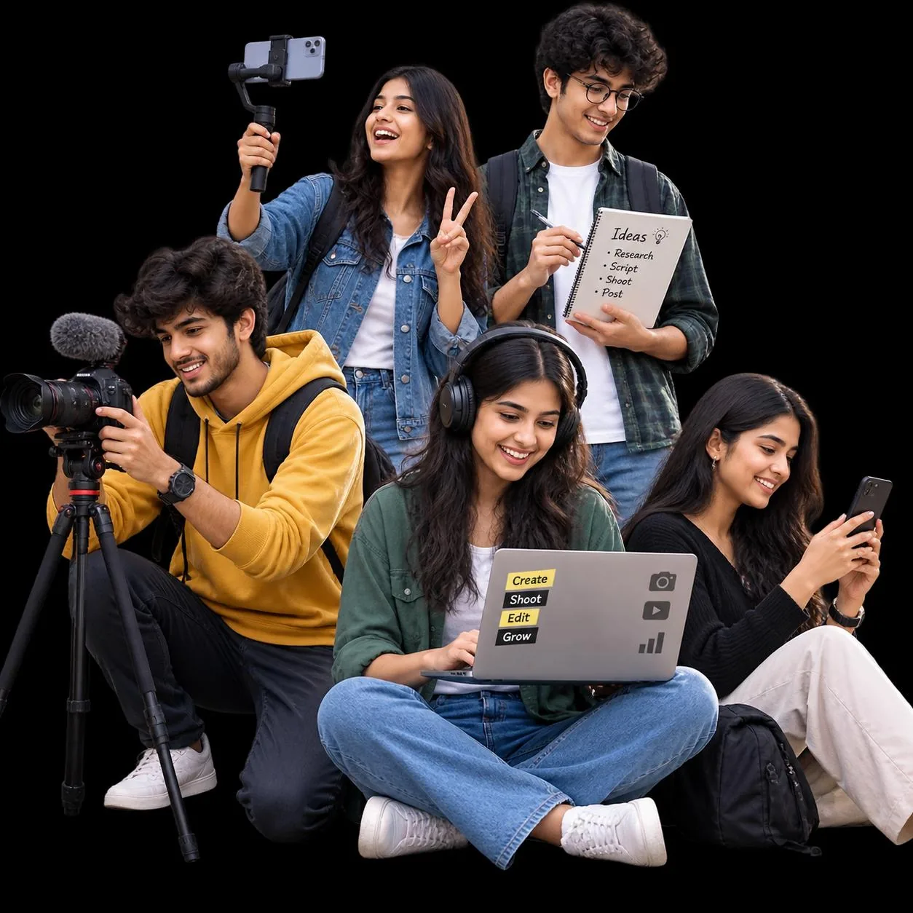
BigHaat needed content it could not buy from an agency: rural, credible, and made by people the audience actually recognises. The answer was a creator network that starts on campus, open to any student who wants to make things, and turns colleges into studios for a micro-drama channel called LoKala.
I wrote the proposition and the narrative: why short-form has become the most trusted screen in the country, what students get (real briefs, a portfolio, payouts), what colleges get (an industry-linked talent pipeline), and how the programme runs from the first workshop to the internship.
The next generation of
rural advertising
looks like entertainment.
The insight was that trust has moved closer to home. People trust a voice like their own more than an anchor or a celebrity. The format already has a name: micro-drama, serialised, binge-worthy, built for the phone. The network turns campuses into studios. Students write and shoot episodes for brands, get paid when the work performs, and leave with a portfolio and a shot at a job.
- The proposition deck: media history, the rural internet shift, the trust argument, the micro-drama format, and the business model.
- A production pipeline from campus workshop, registration and brainstorm through script review, upload, evaluation, analytics and selection.
- A creative bar rather than a language bar: students make the work in whatever language their audience actually speaks.
- The student offer (no experience or following required) and the college offer (an industry-linked talent pipeline and demonstrable employability).
- A creator payout ladder tied to view milestones, and the platform's own content model.
- Live campus sessions, presenting the programme to faculty and students.
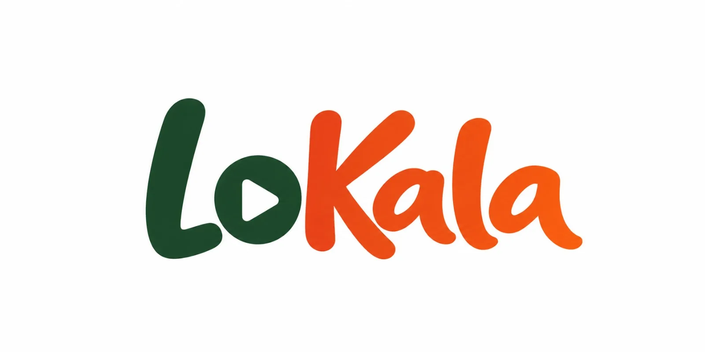
LoKala
The channel the network feeds. Micro-drama, made by students.
LoKala: channel identity and name reveal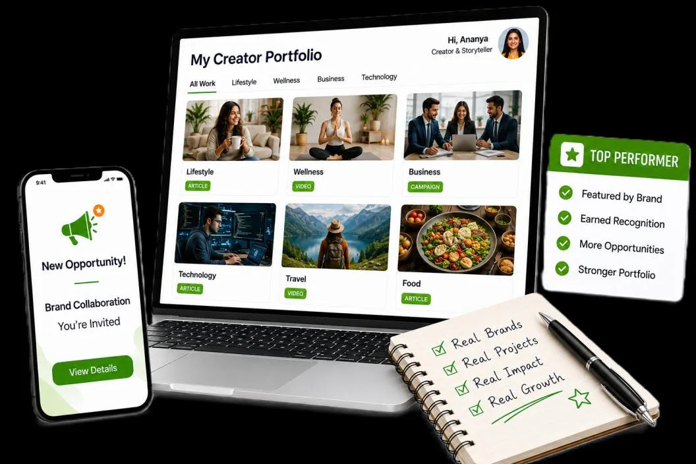
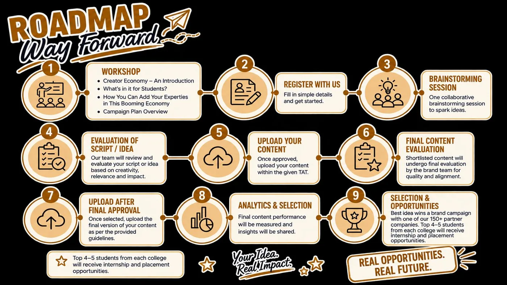
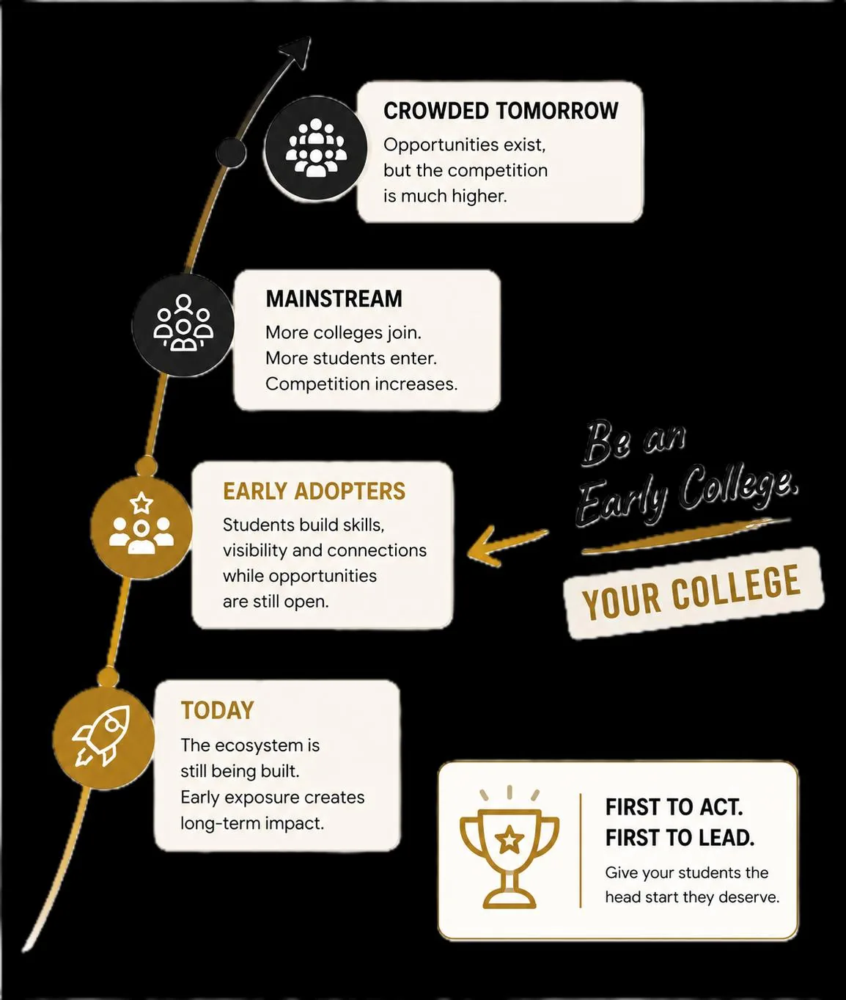
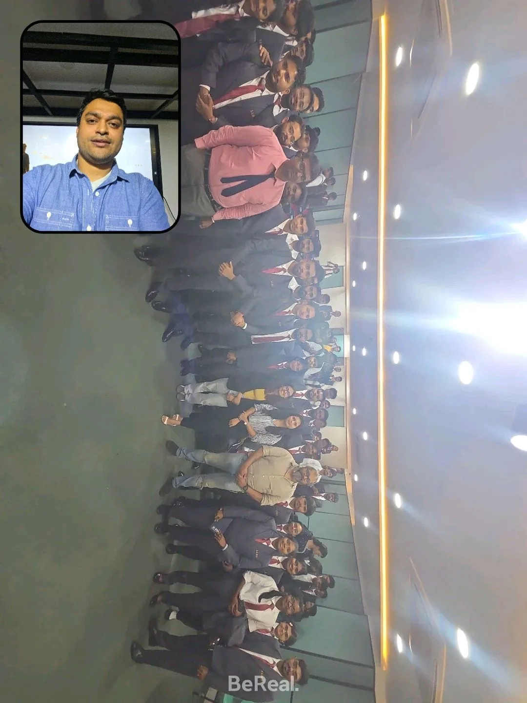
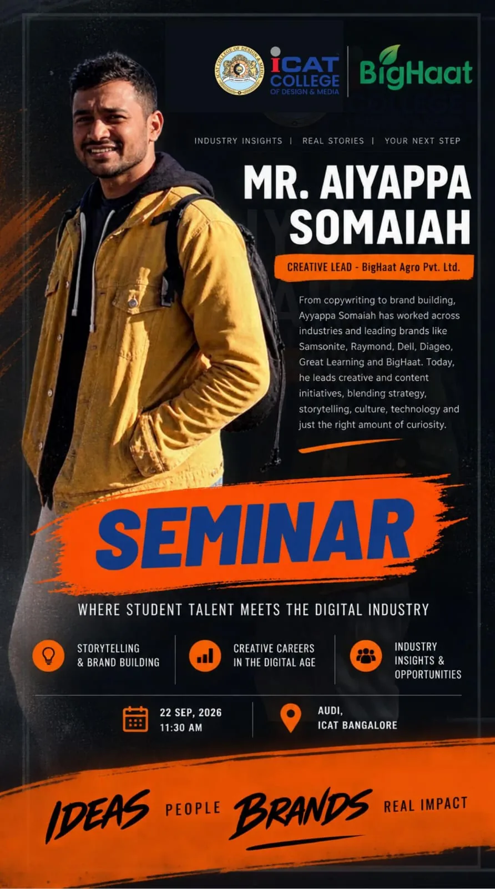
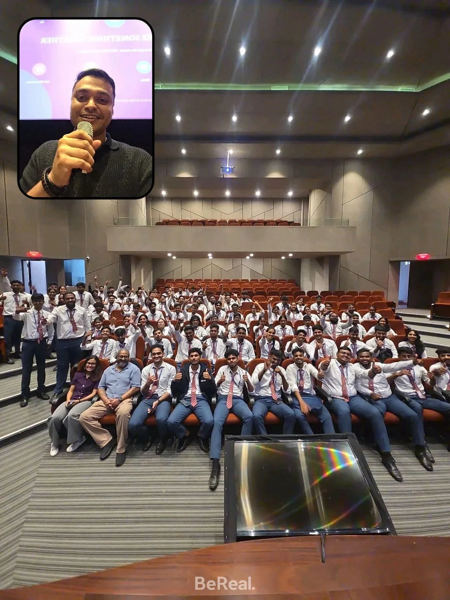
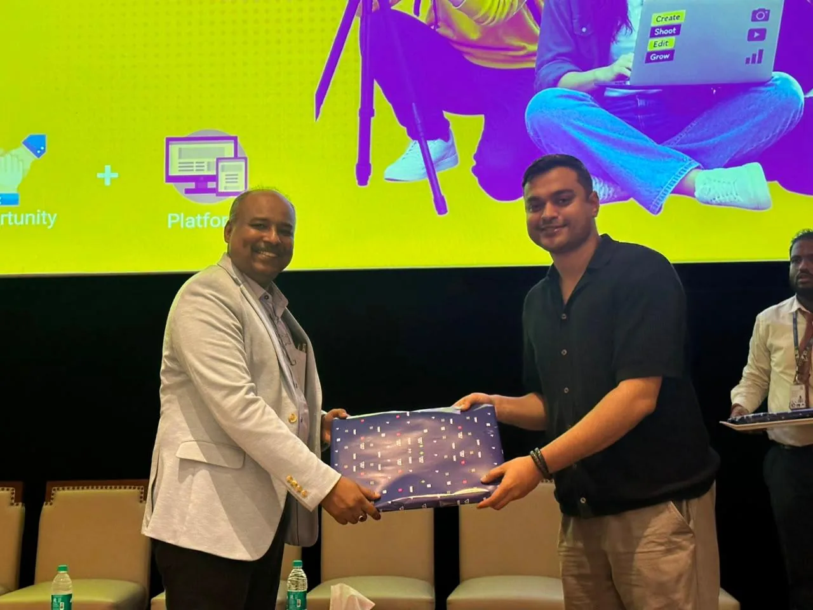
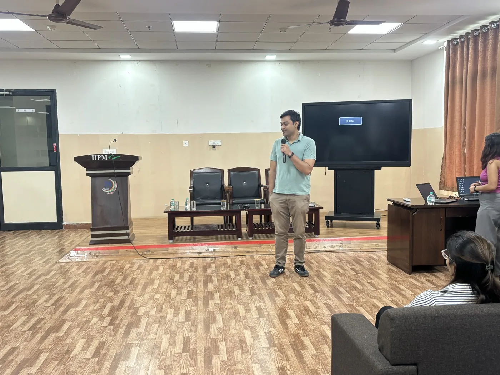
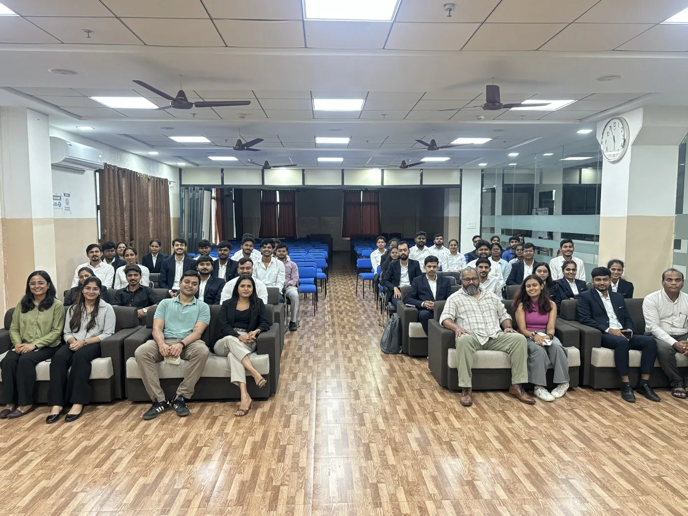
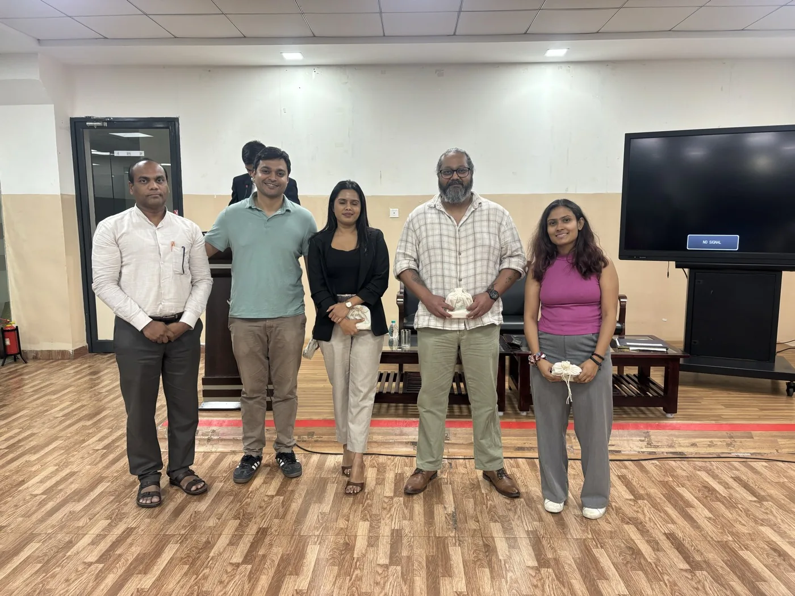
Targets from the business plan, not measured results, the pilot was still being set up when this was written.
Client: BigHaat. Programme material and event photography reproduced with permission.
Look Closely
iDare · 2023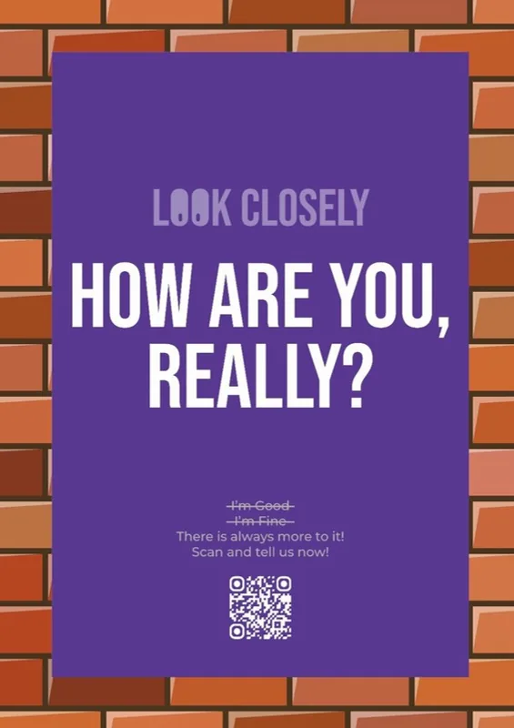